Nuestra razón de ser
El Centro Cívico por la Paz de Pococí es un programa de prevención de la violencia, de inclusión social y promoción de la cultura de paz, que atiende de manera prioritaria a personas menores de edad, con particular énsafif en adolescentes y jóvenes entre los 10 y los 17 años. Es también una estrategia de intervención local permanente para la prevención de la violencia, impulsada por el gobierno central en cogestión y articulación con los Gobiernos Locales.
Nuestros objetivos son la prevención de la violencia y la promoción de la inclusión social, y generamos una oferta de cursos, talleres, espectáculos y actividades en áreas muy diferentes como: teatro, danza artes plásticas, deportes, tecnología, educación técnica, habilidades socioemocionales, liderazgo, lecto escritura, entre otros.
La celebración del día mundial del teatro se llevó a cabo en el marco de estas actividades, bajo el liderazgo de la Prof. Adriana Fallas, facilitadora de teatro y circo y con el apoyo de otras personas funcionarias.
Actividades desarrolladas
A continuación te mostramos los productos generados por este proceso conjunto:
- 74 personas sensibilizadas en el uso de herramientas de teatro para la prevención de la violencia, la comunicación asertiva, la convivencia pacífica y la empleabilidad.
- 1 proceso socioeducativo en convivencia pacífica, cuido y autocuidado, y relaciones saludables, utilizando herramientas propias del teatro.
- 1 taller de Actuación enfocado en los temas de la expresión emocional y habilidades de comunicación.
- 1 taller sobre Herramientas Escénicas para la empleabilidad.
- 1 teatro foro con las obras “Silenciada” y “Silencio afuera, gritos adentro” para sensibilizar sobre las formas de violencia contra las mujeres, rutas de denuncia y prevención.
- 1 página web del proceso conjunto.
Galería